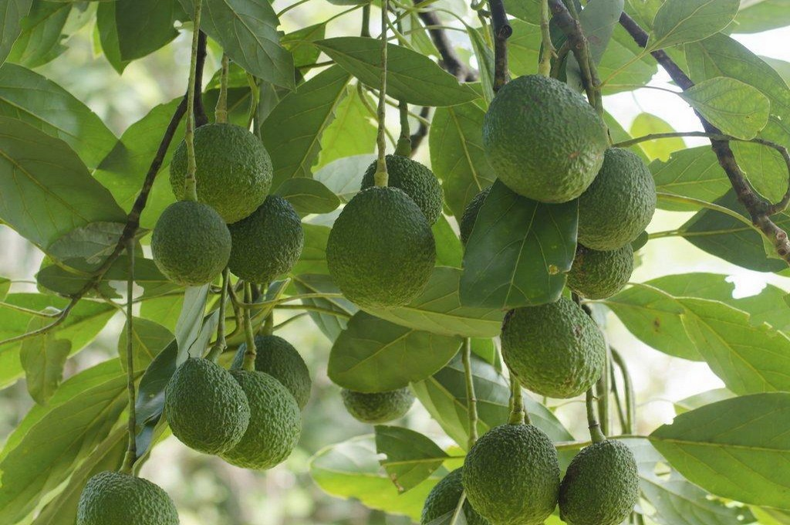

Confinement : l’État annonce la réouverture de jardineries et pépinières pour vendre des plants potagers
La Secrétaire d’État auprès du ministre de l’Économie et des Finances a annoncé la réouverture de jardineries mercredi 1er avril, sous certaines conditions.
Facile : 18 légumes à faire pousser en pot !
Plus faciles à entretenir que les courges, les courgettes se cultivent facilement en pot sur un balcon ou un patio.

Comment planter et faire pousser un avocatier à partir d’un noyau ?
Fan d’avocat ? Au lieu d’en acheter, faites pousser chez vous un avocatier à partir d’un noyau ! Simple et rapide à faire, suivez le pas à pas.
Une vidéo qui nous explique comment réaliser un potager en appartement sur notre balcon, pratique non ? De quoi bien s'occuper pendant le confinement.
Allez-y jeter un coup d'oeil !